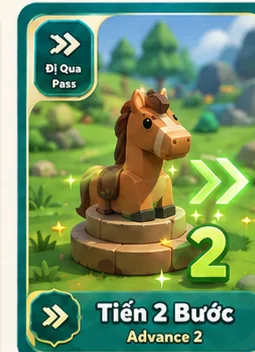
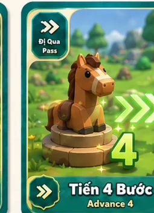
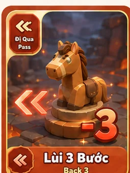
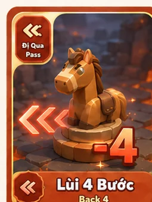

1
Vào phòng
Tạo phòng, nhập mã phòng hoặc tìm trận nhanh. Một ván hỗ trợ từ 2 đến 4 người chơi.
Phần đầu giúp bạn vào game nhanh. Khi cần tra cứu kỹ hơn, hãy mở phần Luật chi tiết hoặc xem thư viện Rune bên dưới.
Rune Race giữ luật nền quen thuộc của Cá ngựa. Điểm mới nằm ở khay Rune, marker bí mật và cơ chế giả danh.
Tạo phòng, nhập mã phòng hoặc tìm trận nhanh. Một ván hỗ trợ từ 2 đến 4 người chơi.
Mỗi người có 2 quân ngựa. Mục tiêu là đưa cả 2 quân về đích trước đối thủ.
Bốc Rune, giữ trong khay hoặc rải marker trên đường đi chung để tạo lợi thế và gây bất ngờ.
Marker có thể hiển thị danh tính giả. Đừng vội tin avatar mà bạn nhìn thấy trên bàn cờ.
Người đang đến lượt và các đối thủ đều có cơ hội ra quyết định trước khi xúc xắc được tung.
Người đang đến lượt có thể bốc Rune nếu chưa vượt quota và khay đang có dưới 5 thẻ còn hạn.
Mọi người chơi có thể rải các Rune đặt được lên ô đường đi chung còn trống, đồng thời chọn danh tính hiển thị.
Sau pha đặt marker, người đang đến lượt có thể bấm thẻ Xuất Chuồng trong khay trước khi tung xúc xắc.
Tung xúc xắc, chọn một quân hợp lệ và xử lý từng marker mà quân đi qua hoặc dừng đúng ô.
Bạn được thêm lượt, nhưng lượt thưởng chỉ lặp lại từ bước tung xúc xắc. Không bốc thẻ mới, không mở thêm pha đặt marker và không mở lại cửa sổ Xuất Chuồng.
Không đặt marker tại ô đang có quân ngựa hoặc trong đường về đích riêng. Mỗi ô chỉ chứa tối đa một marker. Nếu hai người chọn cùng một ô, request được server nhận trước sẽ giữ ô.
Thời hạn được đếm theo lượt bình thường của danh tính đang hiển thị trên marker. Nếu danh tính đó rời trận hoặc đã hoàn thành toàn bộ quân, marker chuyển sang đếm theo vòng toàn bàn.
Dùng bộ lọc để xem từng nhóm thẻ. Xuất Chuồng là thẻ dùng trực tiếp từ khay; các thẻ còn lại có thể tạo marker trên đường đi chung.









| Nhóm | Rune | Kích hoạt | TTL marker | Hiệu ứng |
|---|---|---|---|---|
| Support | Xuất Chuồng | Dùng trực tiếp từ khay | Không tạo marker | Đưa một quân từ chuồng ra ô xuất phát nếu có thể. Thẻ luôn bị tiêu hao sau khi bấm. |
| Support | Khiên Chắn | Đi qua | 3 vòng | Cấp tối đa một lớp Khiên, chặn một bẫy Lùi, Đóng Băng hoặc Về Chuồng tiếp theo. |
| Support | Tiến 2 / 3 / 4 | Đi qua | 3 vòng | Cộng thêm số bước tiến ghi trên thẻ vào chuyển động hiện tại. |
| Trap | Lùi 3 / 4 / 5 | Đi qua | 3 vòng | Quân lập tức đổi sang lùi theo số bước trên thẻ. Khi đang lùi gặp thêm Lùi, số bước được cộng dồn. |
| Trap | Đóng Băng | Đi qua | 3 vòng | Quân dừng ngay và không thể được chọn trong 2 lượt bình thường tiếp theo của chủ quân. |
| Trap | Về Chuồng | Dừng đúng ô | 5 vòng | Đưa quân kích hoạt về chuồng, trừ khi bị Khiên vô hiệu hóa. |
| Special | Hoán Vị | Dừng đúng ô | 5 vòng | Người chạm marker chọn một quân hợp lệ của danh tính hiển thị để đổi chỗ. Khiên không chặn được Hoán Vị. |
Mỗi mục có thể mở độc lập để bạn chỉ đọc phần đang cần. Các thông tin quan trọng được viết theo thứ tự diễn ra trong game.
Học luật nhanh nhất bằng cách vào game và trải nghiệm Rune cùng bạn bè.